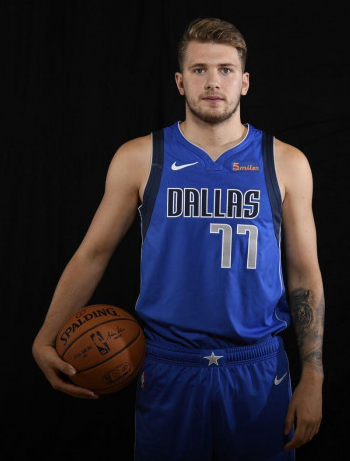

Luka Dončić
Guard
Basic Info
Age: 23Height: 201 cm
Weight: 104 kg
Position: Point guard
Current team: Dallas Mavericks
Youth career
In September 2012, at 13 years of age, Dončić signed a five-year
contract with Real Madrid, immediately standing out on the under-16 team with coach Paco
Redondo. He moved to Madrid, living with football and basketball prospects. In
February 2013, Dončić led Real Madrid to a Minicopa Endesa win, averaging 24.5 points, 13
rebounds, 4 assists, and 6 steals per game. In the tournament's final game, he contributed 25
points, 16 rebounds, and 5 steals to defeat FC Barcelona and win MVP honors. In March,
Dončić earned MVP accolades of the under-16 Spain Championship, scoring 25 points in a
championship game win over the Gran Canaria youth team.
In the 2014–15 season, Dončić mainly played with Real Madrid's under-18 team and reserve team.
With the reserve team, he averaged 13.5 points, 5.9 rebounds, and 3.1 assists, helping them win
Group B of the Liga EBA, the amateur fourth-division of Spanish basketball. By the end
of the season, he earned all-league honorable mention accolades from the basketball website
Eurobasket.com. In January 2015, Dončić won the under-18 Ciutat de L'Hospitalet Tournament
and was selected to the All-Tournament Team, despite being two years younger than the rest of
the team. On January 6, against the youth team of his former club Union Olimpija, he posted
a double-double of 13 points, 13 rebounds, 4 assists, and 4 steals. In May 2015, he also won
the under-18 Next Generation Tournament, for which he was selected MVP after helping defeat
defending champions Crvena zvezda Belgrade in the final.
Proffesional career
Dallas Mavericks
On June 21, 2018, Dončić was selected with the third overall pick by the
Atlanta Hawks in the 2018 NBA draft. He was then traded to the Dallas Mavericks in exchange for
the draft rights to Trae Young and a protected future first-round pick in 2019. After the draft,
Mavericks head coach Rick Carlisle said, "At one point, we thought there might be a slight
chance Dončić could fall to us, but a couple of days ago it was pretty clear that there was no
way that was going to happen. He's just too good. We get a guy we think is franchise foundation
piece." He signed his rookie contract with the Mavericks on July 9, 2018. Dončić did not play at
the 2018 NBA Summer League due to his late buyout from Real Madrid. Before the 2018–19
season, ESPN considered him the favorite to win the NBA Rookie of the Year Award.
Dončić made his regular-season debut on October 17, 2018, recording 10 points, 8 rebounds, and 4
assists, in a 121–100 loss to the Phoenix Suns.
On February 6, Dončić recorded his third triple-double with 19 points, 10 rebounds, and 11
assists in a 99–93 win over the Charlotte Hornets, which made him the youngest player in NBA
history to record three triple-doubles. He edges Hall of Famer Magic Johnson by 117
days. On February 25, Dončić recorded his fourth triple-double with 28 points, 10 rebounds,
and 10 assists in a 121–112 loss to the Los Angeles Clippers. Dončić has four of the five
triple-doubles recorded by teenagers in NBA history. Dončić was named Western Conference
Rookie of the Month for January 2019. His eight triple-doubles ranked fourth on the season
behind Russell Westbrook(34) , Nikola Jokić(12) , and Ben Simmons(10) , as well as tied with
LeBron James.
